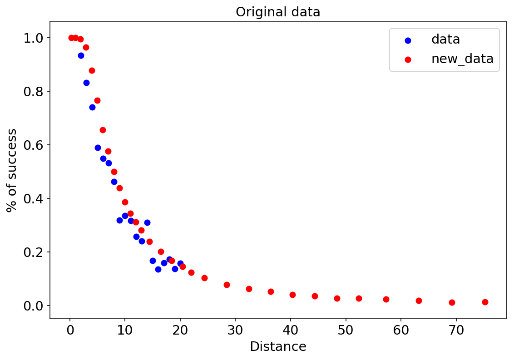
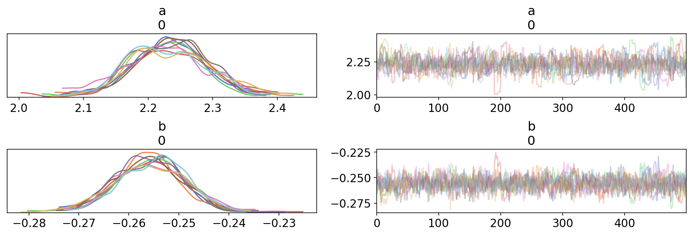
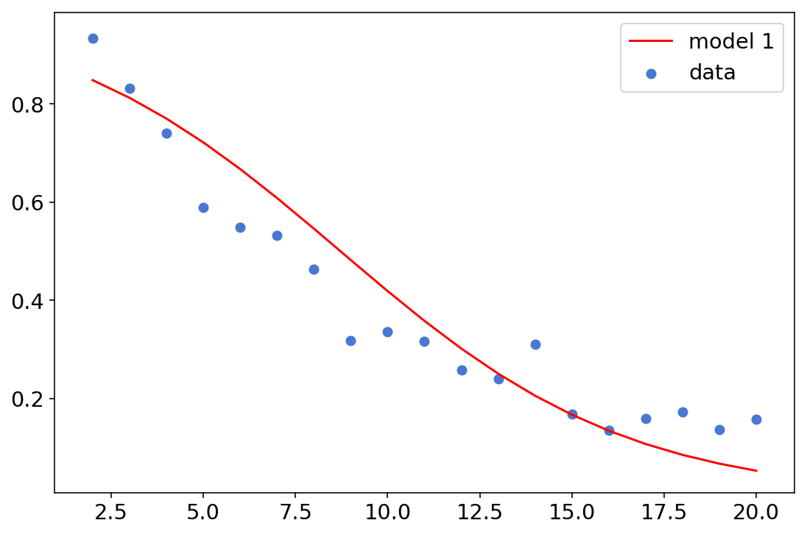
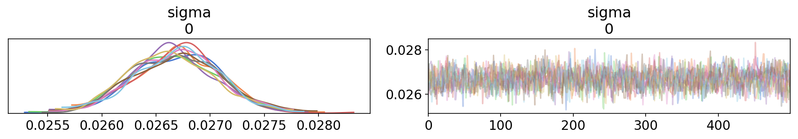
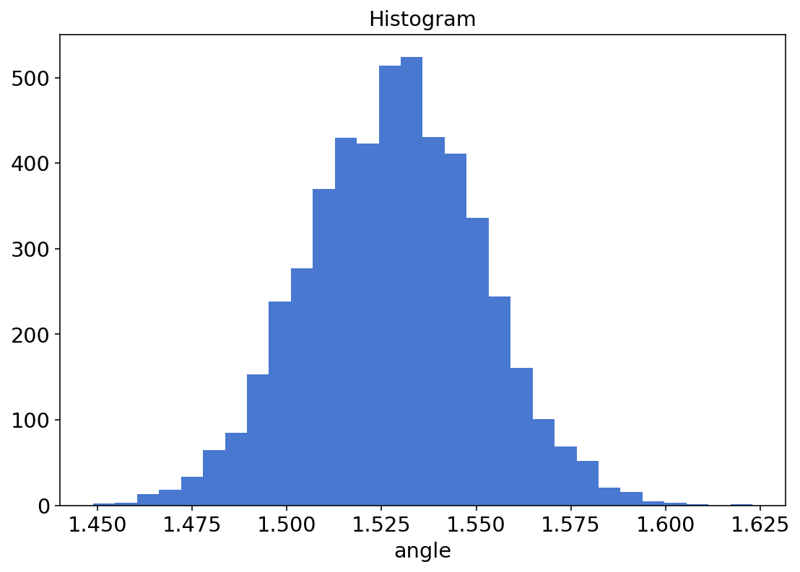
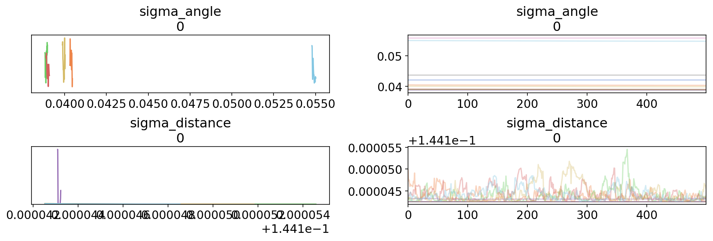
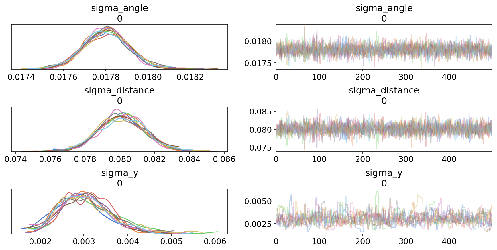
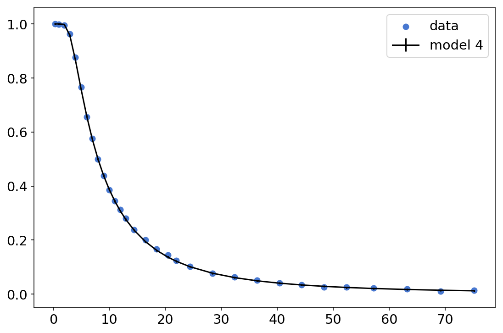

Bayesian golf puttings, NUTS, and optimizing your sampling function with TensorFlow Probability
TL;DR
We’ll:
- Port a great Bayesian modelling tutorial from Stan to TFP
- Discuss how to speed up our sampling function
- Use the
trace_fnto produce Stan-likegenerated quantities - Explore the results using the ArviZ library.
Intro
This is a TFP-port one of of the best Bayesian modelling tutorials I’ve seen online - the Model building and expansion for golf putting Stan tutorial. It’s a beautiful example of modeling from first principles, and why the incorporation of domain knowledge into a statistical model - in this case, knowing a little bit about golf and some high-school physics - is so important. Since there’s no chance I’ll explain the subject nearly as well as Gelman, go read his tutorial and come back if you want to learn how to do this with TFP. :-)
Other than the actual TFP code for the different models, this post will also shortly discuss the new NUTS kernel, various optimizations techniques to make sampling (much) faster, how to use trace_fn to produce Stan-style generated quantities, and the ArviZ plotting library for inspecting sampler traces and statistics. I’m not an expert on any of these topics - I’ll share what I’ve learned while trying to implement these models, and provide links for further reading.
If you’re more into basketball than golf, you might be interested in this case-study; it’s based on the golf tutorial, but analyzes NBA jump shots instead.
# the necessary imports
import tensorflow.compat.v2 as tf
import tensorflow_probability as tfp
import pandas as pd
import seaborn as sns
import matplotlib.pyplot as plt
import numpy as np
from time import time
from tensorflow_probability import distributions as tfd
from tensorflow_probability import bijectors as tfb
from functools import partial
import arviz as az #we'll get to that
sns.set_palette("muted")
np.random.seed(1324)
dtype=tf.float32
params = {
'legend.fontsize': 'x-large',
'figure.figsize': (9, 6),
'axes.labelsize': 'x-large',
'axes.titlesize':'x-large',
'xtick.labelsize':'x-large',
'ytick.labelsize':'x-large'
}
plt.rcParams.update(params)
%config InlineBackend.figure_format = 'retina'
ArviZ
In the previous posts we’ve been using seaborn for plotting. Seaborn is an amazing plotting library with good defaults and well-designed API, but it was not built with MCMC simulations in mind. ArviZ was. ArviZ allows for “Exploratory analysis of Bayesian models”, and interfaces with many bayesian modeling libraries such as PyStan, PyMC3, Pyro, emcee and TFP. ArviZ prints nice dataframes with summary statistics, supports model comparison using LOO and WAIC (similar to the loo package in R), and a wide variety of diagnosis tools; it’s the most comprehensive Python package for this sort of analysis I’ve seen, and it’s maintained by top PyMC3 contributors.
The only drawback for using ArviZ with TFP at the moment is that the from_tfp function has troubles with multi-chain traces (which are pretty much the norm); I adjusted a code snippet from this notebook and wrote a small helper function to handle this. The tfp_trace_to_arviz function gets a StatesAndTrace object, which is a container with two elements:
- a list of samples tensors (the actual output of the sampler).
- a list of trace statistics.
… and returns an ArviZ InferenceData object. There is a wide range of statistics we can extract from our sampler, which are important for sampling diagnosis. This is the actual function:
# using pymc3 naming conventions, with log_likelihood instead of lp so that ArviZ can compute loo and waic
sample_stats_name = ['log_likelihood','tree_size','diverging','energy','mean_tree_accept']
def tfp_trace_to_arviz(
tfp_trace,
var_names=None,
sample_stats_name=sample_stats_name):
samps, trace = tfp_trace
if var_names is None:
var_names = ["var " + str(x) for x in range(len(samps))]
sample_stats = {k:v.numpy().T for k, v in zip(sample_stats_name, trace)}
posterior = {name : tf.transpose(samp, [1, 0, 2]).numpy() for name, samp in zip(var_names, samps)}
return az.from_dict(posterior=posterior, sample_stats=sample_stats)
The only tricky thing here is the tf.transpose operation - we’re making sure the chain dimension is the first axis, to be consistent with ArviZ conventions (see az.data.numpy_to_data_array).
NUTS
Previous posts have used the Hamiltonian Monte Carlo sampler to sample from our posterior distributions. When I tried to use HMC to sample from the models described below (specifically, from the 3rd and 4th models) I’ve had troubles reproducing the results from the Stan tutorial. I’ve posted a question on the TFP google group (super responsive and helpful), and Junpeng Lao (PyMC3 core developer, now working on TFP) recommended I’ll try the new NUTS kernel, instead. He said NUTS requires significantly less hand-tuning for complex models, compared to HMC; he was right.
Since the posts so far were mostly code-oriented, we haven’t really gotten into the HMC algorithm, so we’re not going to get into why NUTS is an improvement; suffice to say it traverses the posterior distribution in a more efficient way, which is good for us (the simple people who don’t know how to hand-tune the number of leapfrog steps). We’ll see below another new addition to TFP that helps with another fine-tuning problem.
For further reading, these are all excellent:
- The original NUTS paper.
- Michael Betancourt’s A Conceptual Introduction to Hamiltonian Monte Carlo paper.
- For the more code-oriented reader - Colin Carroll’s excellent series of posts on HMC, tuning, etc. Colin is one of the maintainers of both ArviZ and PyMC3.
- Sigrid Keydana’s explanation is also excellent and less intimidating than the original articles.
I’ll now go over the code we’ll use to run the NUTS sampler. We’ll start with explaining trace_fn, which is not NUTS specific but we’ll use it in our run_nuts function; then we’ll cover the run_nuts function itself.
Tracing sampler statistics
TFP allows us to collect various statistics of the sampling procedure, which can be important for diagnosing different kinds of problems with our model. To tell TFP which sampler statistics we actually care about, we need to pass sample_chain a mysterious looking function called trace_fn, which takes two arguments: states, and previous_kernel_results (or pkr; took me a while understand what this stands for). In most examples (e.g., in sample_chain’s docs), the states argument is discarded and some field(s) of the pkr (which is a collections.namedtuple object) are returned. To see what are the different kinds of statistics you can extract from previous_kernel_results for the NUTS sampler, see here.
Following the same notebook linked above, we’re extracting the following statistics (most of this came from this PyMC3 Sampler Statistics notebook):
target_log_prob- log likelihood of the current state. If you’re interested in using ArviZ for model comparison, you need to extract this.leapfrogs_taken- NUTS generates a binary tree during sampling; this is the number of leafs in the tree per iteration. If the tree size is large, this can imply there are strong correlations in the posterior, high curvature “funnels”, and that reparameterization of the model (for example, moving from a centered to non-centered representation) might be helpful.has_divergence- Whether the trajectory for this sample diverged. See Michael Betancourt’s excellent post for what are divergences and how you can use them to detect problems with your model.energy- The energy at the point in phase-space where the sample was accepted. Can be used to identify posteriors with problematically long tails. See here.log_accept_ratio- The mean acceptance probability for the tree that generated this sample. This can be compared to the desired target acceptance ratio for diagnosis.def trace_fn(_, pkr): return ( pkr.inner_results.inner_results.target_log_prob, pkr.inner_results.inner_results.leapfrogs_taken, pkr.inner_results.inner_results.has_divergence, pkr.inner_results.inner_results.energy, pkr.inner_results.inner_results.log_accept_ratio )
The pkr.inner_results.inner_results part is due to the fact that we’re using a kernel-within-a-kernel-within-a-kernel - see below.
Calling NUTS
The code for running the NUTS sampler is somewhat different than the sampleHMC function we’ve used in the previous posts. Here’s a helper function for running NUTS that takes a tracing function, a log probability function, a list of initial values and an (optional) list of bijectors, and returns samples and sampler statistics.
n_chains = 10
def run_nuts_template(
trace_fn,
target_log_prob_fn,
inits,
bijectors_list=None,
num_steps=500,
num_burnin=500,
n_chains=n_chains):
step_size = np.random.rand(n_chains, 1)*.5 + 1.
if not isinstance(inits, list):
inits = [inits]
if bijectors_list is None:
bijectors_list = [tfb.Identity()]*len(inits)
kernel = tfp.mcmc.DualAveragingStepSizeAdaptation(
tfp.mcmc.TransformedTransitionKernel(
inner_kernel=tfp.mcmc.NoUTurnSampler(
target_log_prob_fn,
step_size=[step_size]*len(inits)
),
bijector=bijectors_list
),
target_accept_prob=.8,
num_adaptation_steps=int(0.8*num_burnin),
step_size_setter_fn=lambda pkr, new_step_size: pkr._replace(
inner_results=pkr.inner_results._replace(step_size=new_step_size)
),
step_size_getter_fn=lambda pkr: pkr.inner_results.step_size,
log_accept_prob_getter_fn=lambda pkr: pkr.inner_results.log_accept_ratio,
)
res = tfp.mcmc.sample_chain(
num_results=num_steps,
num_burnin_steps=num_burnin,
current_state=inits,
kernel=kernel,
trace_fn=trace_fn
)
return res
What have we got here?
- The
NUTSkernel is hidden within theTransformedTransitionKernel, and gets as inputs thetarget_log_prob_fnfunction representing the model we want to sample from, and a list of per-variablestep_sizefor the NUTS algorithm. TFP’s docs recommend these should be of the same order-of-magnitude as the standard deviations of the target distribution; here they’re taken to be of order 1, and jittered (this can apparently help with areas of high-curvature of the posterior - see the Stan manual on HMC parameters for more details). - A
TransformedTransitionKernelwrapsNUTSin case we’re using unconstraining bijectors. For a more in-depth explanation on bijectors, see my previous post. If no bijectors are passed, we’re using Identity bijectors. - This is wrapped by
tfp.mcmc.DualAveragingStepSizeAdaptation, which, as the name suggests, adapts the sampler step size in order to make sampling more efficient. This is the 2nd addition that saves hand-tuning I’ve mentioned above. We’re setting the number of adaptation steps to be 80% of the number of burnin step, following TFP’s recommendation.
The whole kernel-within-kernel-within-kernel is passed to sample_chain, along with initial values, the trace function from above, number of burnin steps and number of results.
Speeding up your sampler with XLA compilation
We can call run_nuts as it is and everything will work fine. However, we can use some TFP optimisation tricks to make sampling significantly faster. Optimizing the sampling function is a one liner:
run_nuts = partial(run_nuts_template, trace_fn)
run_nuts_opt = tf.function(run_nuts)
run_nuts_defun = tf.function(run_nuts, autograph=False)
What’s this?
- We’re using
functools.partialto “plug in” the tracing function. This simply saves writingrun_nutsseveral times for several tracing functions. - Decorating the
run_nutsfunction withtf.functioncompiles it into atf.Graph, which means faster execution and easy integration with the GPU or TPU. This is done by tracing the TensorFlow operations inrun_nutsand constructing the correspondingtf.Graph, allowing TensorFlow to optimize and exploit parallelism in the computation defined byrun_nuts. See here and here if you’re interested in learning more. - The
autograph=Falseis related to how control-flow statements are handled; setting it toFalseis the recommendation of the TFP team (we’ll benchmark all these below).
We can even have a faster version:
run_nuts_defun_xla = tf.function(run_nuts, autograph=False, experimental_compile=True)
experimental_compile=True compiles the whole graph into XLA, which is even faster, as we’ll see below. XLA is a domain-specific compiler used by TensorFlow (and jax) to produce highly optimized code and CPU/GPU/TPU compatibility. For learning more about XLA compilation, read this and watch the talk at the bottom of the page.
Data
There are two datasets in the original Stan tutorial - we call them data and new_data. The first column is the distance (x) from the hole, the second column is the number of attempts, and the last column is the number of successful putts:
data = np.array([[2,1443,1346],
[3,694,577],
[4,455,337],
[5,353,208],
[6,272,149],
[7,256,136],
[8,240,111],
[9,217,69],
[10,200,67],
[11,237,75],
[12,202,52],
[13,192,46],
[14,174,54],
[15,167,28],
[16,201,27],
[17,195,31],
[18,191,33],
[19,147,20],
[20,152,24]])
new_data = np.array([[0.28, 45198, 45183],
[0.97, 183020, 182899],
[1.93, 169503, 168594],
[2.92, 113094, 108953],
[3.93, 73855, 64740],
[4.94, 53659, 41106],
[5.94, 42991, 28205],
[6.95, 37050, 21334],
[7.95, 33275, 16615],
[8.95, 30836, 13503],
[9.95, 28637, 11060],
[10.95, 26239, 9032],
[11.95, 24636, 7687],
[12.95, 22876, 6432],
[14.43, 41267, 9813],
[16.43, 35712, 7196],
[18.44, 31573, 5290],
[20.44, 28280, 4086],
[21.95, 13238, 1642],
[24.39, 46570, 4767],
[28.40, 38422, 2980],
[32.39, 31641, 1996],
[36.39, 25604, 1327],
[40.37, 20366, 834],
[44.38, 15977, 559],
[48.37, 11770, 311],
[52.36, 8708, 231],
[57.25, 8878, 204],
[63.23, 5492, 103],
[69.18, 3087, 35],
[75.19, 1742, 24]])
df = pd.DataFrame(data, columns = ['x','n','y'])
new_df = pd.DataFrame(new_data, columns = ['x','n','y'])
This is how the data looks like:
plt.scatter(df['x'],df['y']/df['n'],c='b',label='data')
plt.scatter(new_df['x'],new_df['y']/new_df['n'],c='r',label='new_data')
plt.legend()
plt.xlabel("Distance")
plt.ylabel("% of success")
plt.title("Original data");

Model 1
The first model is a simple logistic regression. Since the graph above is somewhat skewed and not symmetric around its midpoint (like a sigmoid), you can already guess logistic regression won’t be very accurate but why not:
root = tfd.JointDistributionCoroutine.Root
def golf_logistic():
a = yield root(tfd.Sample(tfd.Normal(0,1e6),1))
b = yield root(tfd.Sample(tfd.Normal(0,1e6),1))
y = yield tfd.Independent(
tfd.Binomial(
total_count = tf.cast(df['n'],dtype),
logits = a+tf.cast(df['x'],dtype)*b
)
)
golf_logistic_jd = tfd.JointDistributionCoroutine(golf_logistic)
Note that unlike the Stan tutorial, we’re using a super-vague but proper prior $\mathcal{N}\left(0,10^6\right)$.
We’ll use tfd.JointDistributionCoroutine to build all 4 models in this post. JointDistributionCoroutine is a cousin of the more-intuitive JointDistributionSequential we’ve used in previous posts. Instead of a list of tfd.Distribution-like instances, we’re passing a generator that yields a sequence of tfd.Distribution-like instances. The main advantage is that with Coroutine’s function syntax its easier to express intermediate calculations, compared to Sequential’s list syntax. This will come in handy already in the 2nd model.
The main differences are that we need to use yield everytime we’re sampling from a distribution, and wrap priors (random variables in the model that don’t depend on other random variables) with root.
Once we have our model, we feed its log_prob method together with the observed data into run_nuts.
golf_logistic_log_prob = lambda *args: golf_logistic_jd.log_prob(args + (tf.cast(df['y'],dtype),))
Let’s see how each of the run_nuts version is doing:
%%time
res = run_nuts(golf_logistic_log_prob, [tf.ones((n_chains,1)), tf.ones((n_chains,1))])
CPU times: user 13min 5s, sys: 4.28 s, total: 13min 10s
Wall time: 13min 13s
%%time
res = run_nuts_opt(golf_logistic_log_prob, [tf.ones((n_chains,1)), tf.ones((n_chains,1))])
CPU times: user 29.7 s, sys: 4.13 s, total: 33.8 s
Wall time: 18.7 s
%%time
res = run_nuts_defun(golf_logistic_log_prob, [tf.ones((n_chains,1)), tf.ones((n_chains,1))])
CPU times: user 29 s, sys: 4.04 s, total: 33 s
Wall time: 17.9 s
%%time
res = run_nuts_defun_xla(golf_logistic_log_prob, [tf.ones((n_chains,1)), tf.ones((n_chains,1))])
CPU times: user 6.29 s, sys: 77.9 ms, total: 6.37 s
Wall time: 6.39 s
So tf.function makes a huge difference, autograph True/False doesn’t really matter here, and XLA definitely helps.
Visualizing the results with ArviZ is now straightforward:
trace1 = tfp_trace_to_arviz(res,['a','b'])
az.plot_trace(trace1);

And so is displaying summary statistics:
az.summary(trace1)
| mean | sd | hpd_3% | hpd_97% | mcse_mean | mcse_sd | ess_mean | ess_sd | ess_bulk | ess_tail | r_hat | |
|---|---|---|---|---|---|---|---|---|---|---|---|
| a[0] | 2.231 | 0.061 | 2.115 | 2.346 | 0.002 | 0.001 | 1017.0 | 1016.0 | 1030.0 | 833.0 | 1.01 |
| b[0] | -0.256 | 0.007 | -0.269 | -0.243 | 0.000 | 0.000 | 1294.0 | 1293.0 | 1297.0 | 1320.0 | 1.01 |
Let’s see how this logistic regression looks like when we use the mean parameters:
a,b = az.summary(trace1)['mean']
plt.plot(df['x'], [np.exp(x)/(1+np.exp(x)) for x in a+df['x']*b],c='r',label='model 1')
plt.scatter(df['x'], df['y']/df['n'],label='data')
plt.legend();

Model 2
Logistic regression is a good start, but we can see it’s not doing a very good job at fitting our data. The second model is a major improvement, incorporating the knowledge that this data is describing attempts to insert a small ball into a larger hole; therefore their sizes, the distance between them and the corresponding angles probably matter.
r = (1.68/2)/12 #ball size
R = (4.25/2)/12 #hole size
#threshold angles
df['th_angle'] = np.arcsin((R-r)/df['x'])
new_df['th_angle'] = np.arcsin((R-r)/new_df['x'])
normal_cdf = tfb.NormalCDF()
def golf_angle_distance():
# priors
sigma = yield root(tfd.Sample(tfd.HalfNormal(1e6),1))
# transformations
phi = 2*normal_cdf.forward(
tf.cast(df['th_angle'],dtype)/sigma
)-1
# likelihood
y = yield tfd.Independent(
tfd.Binomial(
tf.cast(df['n'],dtype),
probs=phi
)
)
golf_angle_distance_jd = tfd.JointDistributionCoroutine(golf_angle_distance)
golf_angle_distance_jd_log_prob = lambda *args: golf_angle_distance_jd.log_prob(
args + (tf.cast(df['y'], dtype),)
)
Note that something like phi would be difficult to express with Sequential, but straightforward with Coroutine.
We’ll use this model as an opportunity to do something different with our trace_fn. Stan has this super useful generated quantities block, in which we can use the sampled parameters to generated various kinds of quantities of interest. We’ve mentioned above that trace_fn takes a state and a pkr, and usually discards the first. We’ll now modify our trace_fn so that in each step it takes the current angle (in radians) and converts it to degrees:
def trace_fn_angles(current_state, pkr):
return (
tf.squeeze(current_state[0]*180/np.pi),
pkr.inner_results.inner_results.target_log_prob,
pkr.inner_results.inner_results.leapfrogs_taken,
pkr.inner_results.inner_results.has_divergence,
pkr.inner_results.inner_results.energy,
pkr.inner_results.inner_results.log_accept_ratio
)
We’re taking the current state, representing the angle in radians, and convert it to degrees. The tf.squeeze is here to get rid of a redundant dimension that can cause broadcasting issues later.
As for timing - the non tf.function-ed version is so slow that we won’t even try. Let’s compare the other alternatives:
run_nuts_angle = partial(run_nuts_template, trace_fn_angles)
run_nuts_opt_angle = tf.function(run_nuts_angle)
run_nuts_defun_angle = tf.function(run_nuts_angle, autograph=False)
run_nuts_defun_xla_angle = tf.function(run_nuts_angle, autograph=False, experimental_compile=True)
%%time
res = run_nuts_opt_angle(golf_angle_distance_jd_log_prob, [tf.ones((n_chains,1))], [tfb.Exp()])
CPU times: user 6.18 s, sys: 808 ms, total: 6.99 s
Wall time: 3.96 s
%%time
res = run_nuts_defun_angle(golf_angle_distance_jd_log_prob, [tf.ones((n_chains,1))], [tfb.Exp()])
CPU times: user 6.06 s, sys: 755 ms, total: 6.82 s
Wall time: 3.93 s
%%time
res = run_nuts_defun_xla_angle(golf_angle_distance_jd_log_prob, [tf.ones((n_chains,1))], [tfb.Exp()])
CPU times: user 5.29 s, sys: 59.1 ms, total: 5.35 s
Wall time: 5.38 s
No clear winner this time. Let’s inspect the trace:
trace2 = tfp_trace_to_arviz(res,['sigma'],
sample_stats_name=['angle']+sample_stats_name)
az.plot_trace(trace2);

Since we traced the angles using trace_fn_angles, ArviZ treats it as another sample statistics - it’s saved as an xarray.DataArray and even has its own plotting method:
trace2.sample_stats.angle.plot.hist(bins=30);

I found this nice and cleaner than sns.distplot(res[0][0].numpy().flatten()*180/np.pi).
We print the summary statistics and make sure we’re reproducing the Stan tutorial results:
az.summary(trace2)
| mean | sd | hpd_3% | hpd_97% | mcse_mean | mcse_sd | ess_mean | ess_sd | ess_bulk | ess_tail | r_hat | |
|---|---|---|---|---|---|---|---|---|---|---|---|
| sigma[0] | 0.027 | 0.0 | 0.026 | 0.027 | 0.0 | 0.0 | 2074.0 | 2073.0 | 2077.0 | 3648.0 | 1.0 |
Comparing models 1 & 2 with ArviZ
ArviZ allows us to conduct model comparison using approximate Leave-One-Out cross validation and WAIC information criteria (read more here if you’re interested). To do so, our ArviZ objects must have a log_likelihood sampler stats field (this is why we’ve included target_log_prob in our tracing function):
trace1.sample_stats.log_likelihood.shape, trace2.sample_stats.log_likelihood.shape
((10, 500), (10, 500))
Model comparison is now as easy as:
az.compare({'Model 1':trace1, 'Model 2':trace2})
| rank | waic | p_waic | d_waic | weight | se | dse | warning | waic_scale | |
|---|---|---|---|---|---|---|---|---|---|
| Model 2 | 0 | 203.973 | 0.521524 | 0 | 1 | 2.20886e-14 | 0 | True | deviance |
| Model 1 | 1 | 424.486 | 1.12655 | 220.513 | 1.30697e-48 | 1.10443e-14 | 0 | True | deviance |
The models are ranked from best to worst, so Model 2 (not surprisingly) outperforms Model 1. For more info about model comparison, how to read this table and its visualization using az.plot_compare, see here.
Model 3
The authors aren’t satisfied with the fit of Model 2 and incorporate yet another piece of golf knowledge - other than shooting the ball at the right angle, you need to shoot it to the right distance, as well. They describe how this can be modelled, and proceed to fit the model:
distance_tol = 3.
overshot = 1.
def golf_angle_distance_2():
# priors
sigma_angle = yield root(tfd.Sample(tfd.HalfNormal(1),1))
sigma_distance = yield root(tfd.Sample(tfd.HalfNormal(1),1))
# transformations
p_angle = 2 * normal_cdf.forward(
tf.cast(new_df['th_angle'],dtype)/sigma_angle
)-1
p_dist = normal_cdf.forward(
(distance_tol-overshot)/(tf.cast(new_df['x']+overshot,dtype)*sigma_distance)
) - \
normal_cdf.forward(
(-overshot)/(tf.cast(new_df['x']+overshot,dtype)*sigma_distance)
)
# likelihood
y = yield tfd.Independent(
tfd.Binomial(
tf.cast(new_df['n'],dtype),
probs=p_angle*p_dist
)
)
golf_angle_distance_2_jd = tfd.JointDistributionCoroutine(golf_angle_distance_2)
golf_angle_distance_2_jd_log_prob = lambda *args: golf_angle_distance_2_jd.log_prob(
args + (tf.cast(new_df['y'], dtype),)
)
%%time
res = run_nuts_opt(golf_angle_distance_2_jd_log_prob, [tf.ones((n_chains,1)), tf.ones((n_chains,1))],
bijectors_list=[tfb.Exp(), tfb.Exp()])
CPU times: user 23min 51s, sys: 4min 30s, total: 28min 21s
Wall time: 10min 13s
%%time
res = run_nuts_defun(golf_angle_distance_2_jd_log_prob, [tf.ones((n_chains,1)), tf.ones((n_chains,1))],
bijectors_list=[tfb.Exp(), tfb.Exp()])
CPU times: user 18min 56s, sys: 3min 51s, total: 22min 48s
Wall time: 8min 11s
%%time
res = run_nuts_defun_xla(golf_angle_distance_2_jd_log_prob, [tf.ones((n_chains,1)), tf.ones((n_chains,1))],
bijectors_list=[tfb.Exp(), tfb.Exp()])
CPU times: user 1min 57s, sys: 38.1 s, total: 2min 35s
Wall time: 1min 6s
Here, XLA makes ~8x difference in speed, which is incredible for an inherently iterative process!
As for the trace:
trace3 = tfp_trace_to_arviz(res,['sigma_angle','sigma_distance'])
az.plot_trace(trace3);

This isn’t what you want to see when inspecting a trace… The chains haven’t mixed at all. Surprisingly, the Stan version had divergent transitions here, while we did not:
trace3.sample_stats.diverging.sum()
<xarray.DataArray 'diverging' ()>
array(0)
Model 4
In the 4th model, instead of using a binomial likelihood, we’re using a normal approximation of the binomial distribution and adding an additional noise term (read the original for a more in-depth explanation):
def golf_angle_distance_3():
# priors
sigma_angle = yield root(tfd.Sample(tfd.HalfNormal(1), 1))
sigma_distance = yield root(tfd.Sample(tfd.HalfNormal(1), 1))
sigma_y = yield root(tfd.Sample(tfd.HalfNormal(1), 1))
# transformations
p_angle = 2 * normal_cdf.forward(
tf.cast(new_df['th_angle'],dtype)/sigma_angle
) - 1
p_dist = normal_cdf.forward(
(distance_tol-overshot)/(tf.cast(new_df['x']+overshot,dtype)*sigma_distance)
) - \
normal_cdf.forward(
(-overshot)/(tf.cast(new_df['x']+overshot,dtype)*sigma_distance)
)
p = p_dist*p_angle
# likelihood
probs = yield tfd.Independent(
tfd.Normal(p, tf.sqrt(p*(1-p)/(tf.cast(new_df['n'],dtype))+sigma_y**2))
)
golf_angle_distance_3_jd = tfd.JointDistributionCoroutine(golf_angle_distance_3)
golf_angle_distance_3_jd_log_prob = lambda *args: golf_angle_distance_3_jd.log_prob(
args + (tf.cast(new_df['y']/new_df['n'], dtype),)
)
%%time
res = run_nuts_opt(golf_angle_distance_3_jd_log_prob, [tf.ones((n_chains,1)), tf.ones((n_chains,1)),tf.ones((n_chains,1))],
bijectors_list=[tfb.Exp()]*3)
CPU times: user 3min 45s, sys: 45.6 s, total: 4min 30s
Wall time: 1min 39s
%%time
res = run_nuts_defun(golf_angle_distance_3_jd_log_prob, [tf.ones((n_chains,1)), tf.ones((n_chains,1)),tf.ones((n_chains,1))],
bijectors_list=[tfb.Exp()]*3)
CPU times: user 4min 2s, sys: 48.4 s, total: 4min 50s
Wall time: 1min 46s
%%time
res = run_nuts_defun_xla(golf_angle_distance_3_jd_log_prob, [tf.ones((n_chains,1)), tf.ones((n_chains,1)),tf.ones((n_chains,1))],
bijectors_list=[tfb.Exp()]*3)
CPU times: user 15.8 s, sys: 177 ms, total: 16 s
Wall time: 16.1 s
Again, XLA is simply an incredible speed up of the sampling function.
trace4 = tfp_trace_to_arviz(res,['sigma_angle','sigma_distance','sigma_y'])
az.plot_trace(trace4);

This looks much better:
az.summary(trace4)
| mean | sd | hpd_3% | hpd_97% | mcse_mean | mcse_sd | ess_mean | ess_sd | ess_bulk | ess_tail | r_hat | |
|---|---|---|---|---|---|---|---|---|---|---|---|
| sigma_angle[0] | 0.018 | 0.000 | 0.018 | 0.018 | 0.0 | 0.0 | 3349.0 | 3348.0 | 3330.0 | 3283.0 | 1.00 |
| sigma_distance[0] | 0.080 | 0.001 | 0.078 | 0.083 | 0.0 | 0.0 | 3178.0 | 3169.0 | 3169.0 | 2313.0 | 1.00 |
| sigma_y[0] | 0.003 | 0.001 | 0.002 | 0.004 | 0.0 | 0.0 | 662.0 | 662.0 | 656.0 | 675.0 | 1.01 |
We’ll extract the mean parameters from the summary, and plot the resulting function:
mean_sigma_angle, mean_sigma_dist, mean_sigma_y = az.summary(trace4)['mean']
normal_cdf = tfb.NormalCDF()
p_angle = 2 * normal_cdf.forward(
tf.cast(new_df['th_angle'],dtype)/mean_sigma_angle
)-1
p_dist = normal_cdf.forward(
(distance_tol-overshot)/(tf.cast(new_df['x']+overshot,dtype)*mean_sigma_dist)
) - \
normal_cdf.forward(
(-overshot)/(tf.cast(new_df['x']+overshot,dtype)*mean_sigma_dist)
)
mean_p = (p_dist*p_angle).numpy()
std_p = (tf.sqrt(mean_p*(1-mean_p)/(tf.cast(new_df['n'],dtype))+mean_sigma_y**2)).numpy()
plt.scatter(new_df['x'],new_df['y']/new_df['n'],label='data')
plt.errorbar(new_df['x'],mean_p,yerr=std_p,c='k',label='model 4')
plt.legend();

This is, by all means, a very impressive fit. And the errorbars are there, they’re just too small we can’t actually see them. Definitely not bad for a 3 parameters model.
Comparison summary
This is a summary of the different timings:
| Model 1 | Model 2 | Model 3 | Model 4 | |
|---|---|---|---|---|
| without tf.function | 793 | - | - | - |
| tf.function, autograph=True | 18.7 | 3.96 | 613 | 99 |
| tf.function, autograph=False | 17.9 | 3.93 | 491 | 106 |
| tf.function + XLA | 6.39 | 5.38 | 66 | 16 |
So XLA compilation is a clear winner. Running the same models with 256 chains instead of 10 (very easy to do with TFP) gives qualitatively similar results.
Wrapping up
In this post we’ve tried to replicate Stan’s awesome golf tutorial. Along the way, we saw how to work with the new NUTS kernel, how to speed it up using tf.function and XLA compilation, how to use the trace_fn to generated quantities of interest, and how to use ArviZ to handle all the plotting for us.
Adam Haber
Computational Neuroscience PhD Student
Interested in probabilistic programming, computational statistics, statistical physics and programming languages.